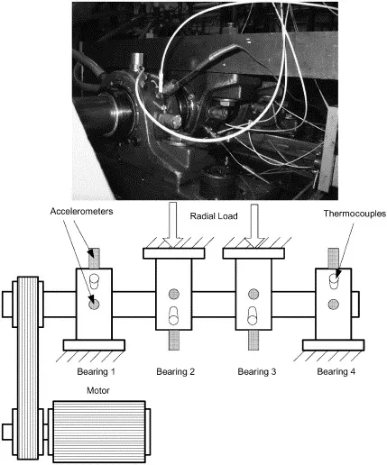
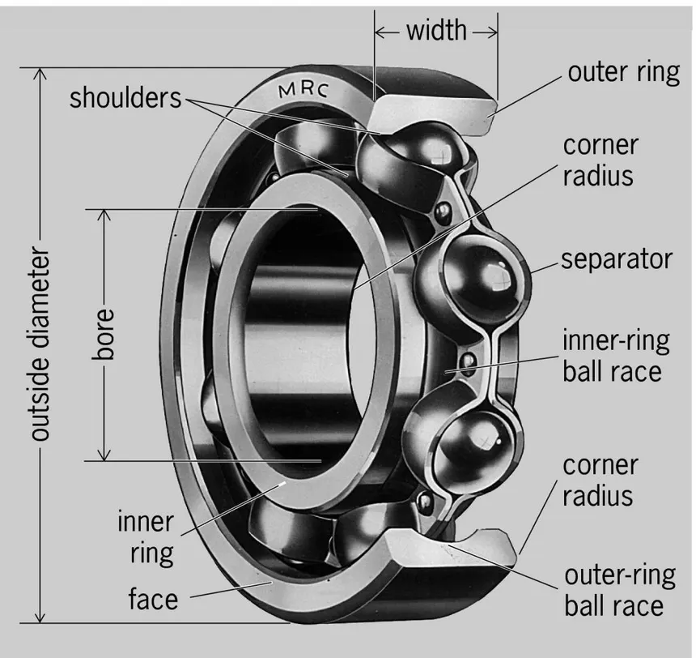

Na indústria real, falhas catastróficas são raras e quase nunca existem milhares de exemplos rotulados de quebra para treinar classificadores supervisionados. Este projeto resolve esse desafio ensinando redes neurais exclusivamente como um rolamento saudável se comporta — detectando a degradação incipiente com 74,8 horas de antecedência através da elevação do erro de reconstrução.
Ao contrário de abordagens caixa-preta que jogam o sinal bruto sem critério na rede, este estudo combina física de máquinas rotativas com aprendizado profundo não-supervisionado:
BPFO ≈ 236,4 Hz).0..400) + padronização Z-Score (StandardScaler) sem vazamento de dados futuros.11 → 4 → 11) com explicabilidade exata feature a feature no instante do alarme.Antes de qualquer equação de Inteligência Artificial, é fundamental compreender o sistema físico que gera os sinais de vibração. O dataset NASA IMS Bearings foi coletado pelo Center for Intelligent Maintenance Systems (University of Cincinnati) em ensaios reais de vida completa até a quebra (Run-to-Failure).
Quatro rolamentos de rolos de dupla fileira Rexnord ZA-2115 são montados em um único eixo acionado por um motor elétrico a 2.000 RPM constantes, submetidos a uma carga radial pesada de 6.000 lbs (2.721 kg). Acelerômetros de quartzo de alta sensibilidade (PCB 353B33) registram snapshots de 20.480 pontos a 20.000 Hz (duração de $\approx 1,024\text{ s}$) a cada 10 minutos.


| Conjunto | Arquivos | Canais | Falha Real ao Final do Ensaio |
|---|---|---|---|
1st_test |
2.156 | 8 (X+Y) | B3 (Pista Interna) e B4 (Elemento Rolante) |
2nd_test (Foco) |
984 | 4 (1/rol.) | Rolamento 1 — Pista Externa (BPFO) |
3rd_test |
4.448 | 4 (1/rol.) | Rolamento 3 — Pista Externa |
Uma dúvida clássica de quem inicia na área é: "Se a pista externa fica presa na carcaça e não gira ($0\text{ RPM}$), como a falha na pista externa tem uma frequência em Hertz?"
A unidade $\text{Hz}$ (eventos por segundo) mede a taxa de repetição dos impactos mecânicos: cada vez que um dos $N_b = 16$ rolos passa por cima da trinca na pista externa, ocorre um micro-choque metálico. Para o rolamento Rexnord ZA-2115 ($N_b = 16$, diâmetro do rolo $d = 8,41\text{ mm}$, diâmetro primitivo $D = 71,50\text{ mm}$, ângulo $\theta = 0^\circ$):
Alimentar um autoencoder diretamente com 20.480 pontos brutos por segundo faz a rede tentar reconstruir fase aleatória e ruído de fundo. Em vez disso, nosso Feature Engine extrai 11 indicadores estatísticos e espectrais por canal que capturam a assinatura energética e impulsiva do rolamento, seguidos por padronização Z-Score (StandardScaler).
Cada métrica enxerga um aspecto físico complementar da deterioração mecânica:
low ($0\text{–}500\text{ Hz}$), mid ($500\text{–}2000\text{ Hz}$), high ($2000\text{–}5000\text{ Hz}$, ressonância estrutural do mancal) e nas janelas de $\pm 8,5\%$ em torno de bpfo ($216\text{–}256\text{ Hz}$), bpfi ($272\text{–}322\text{ Hz}$) e bsf2x ($255\text{–}302\text{ Hz}$).
Uma descoberta crucial da nossa Análise Exploratória (EDA) no 2nd_test: durante todo o período saudável (0..400), o Rolamento 3 (que NÃO falhou!) apresenta Curtose média de $4,53$ (máx $6,70$) e energia na banda BPFO $10\times$ maior ($75.908$) que o Rolamento 1 ($7.835$, Curtose $3,43$)!
A Causa Física: O mecanismo de carga radial de 6.000 lbs aplica força diretamente próximo ao mancal 3, excitando o 7º harmônico da rotação do eixo ($7 \times 33,06\text{ Hz} = 231,4\text{ Hz}$). Como a janela da banda bpfo vai de $216\text{ a }256\text{ Hz}$, esse pico estrutural estacionário cai dentro da banda desde o minuto zero!
StandardScaler (Z-Score) ajustado individualmente nos primeiros 400 arquivos de cada canal, o modelo aprende o baseline próprio de cada posição de sensor:
$$z_j = \frac{x_j - \mu_{\text{treino}, j}}{\sigma_{\text{treino}, j}}$$
Em séries temporais de degradação mecânica, embaralhar dados aleatoriamente (train_test_split(shuffle=True)) é um erro metodológico fatal: coloca dados do futuro degradado dentro do treino, destruindo a validade científica. Nosso protocolo congela a divisão estritamente em ordem cronológica (configs/labeling.yaml).
StandardScaler são ajustados exclusivamente aqui. O modelo nunca vê falhas no treino.750..880)
Arraste o cursor na linha do tempo ao lado até o arquivo 705 e depois até 820. Você notará algo fascinante: após a abertura abrupta da trinca em 700..720 (onde a Curtose salta para $6,9$), a vibração diminui temporariamente entre os arquivos 750 e 880 antes de explodir novamente no 900+!
Na tribologia e fadiga de rolamentos, esse fenômeno é conhecido como healing (alisamento mecânico): a passagem repetida dos rolos sob 6.000 lbs de carga "lixa" e arredonda momentaneamente as bordas vivas da micro-cratera recém-aberta, suavizando o impacto até que a fadiga subsuperficial cause o lascamento severo (spalling).
StandardScaler infla o desvio padrão $\sigma$ em até $18\times$, cegando o detector para a microtrinca inicial!
Comparamos sob protocolo idêntico (3 seeds independentes: 42, 123, 456) três arquiteturas de Autoencoders Neurais (MLP, Conv1D, LSTM) contra dois algoritmos clássicos de mercado (PCA e Isolation Forest).
Um Autoencoder possui duas metades simétricas separadas por um Espaço Latente estreito (Bottleneck de dimensão $d = 4$):
Como a rede é treinada apenas nos arquivos saudáveis (0..400) e forçada a comprimir 11 variáveis em apenas 4 números no gargalo com ativações não-lineares (GELU), ela aprende a variedade curva (manifold) exata das correlações normais do rolamento. Quando surge a microtrinca no arquivo 532, o padrão de entrada foge dessa superfície aprendida, a reconstrução falha e o erro quadrático explode!
b1_energy_high (57%) e b1_rms (32%) dominam o 1º Alarme?Uma vantagem decisiva dos Autoencoders é que o erro MSE pode ser decomposto exatamente feature a feature:
No instante exato do 1º alarme (idx=532..535), b1_energy_high ($2.000\text{–}5.000\text{ Hz}$) responde por 53% a 59% do erro, seguida por b1_rms (27% a 33%), enquanto a banda direta b1_energy_bpfo ainda está em $+0,04\sigma$!
Por quê? Conforme demonstrado na literatura clássica de vibrações (Qiu et al., 2006; Randall & Antoni, 2011), os micro-impactos iniciais da esfera na fissura agem como marteladas curtíssimas que excitam primeiro a ressonância estrutural de alta frequência da carcaça ($2\text{–}5\text{ kHz}$). A energia fundamental em $236,4\text{ Hz}$ na FFT direta só ganha amplitude bruta quando a trinca se alarga (após o arquivo 646).
42, 123, 456) no Set 2Todos os modelos foram avaliados sob o mesmo protocolo experimental rigoroso (alarme sustentado = 3 janelas consecutivas acima do percentil 99 do treino):
| Métrica | PCA (Linear, L=1) | Isolation Forest (L=1) | MLP Autoencoder (L=1) | Conv1D Autoencoder (L=5) | LSTM Autoencoder (L=5) |
|---|---|---|---|---|---|
1º Alarme Sustentado (idx) |
601,0 ± 0,0 | 636,0 ± 14,1 | 532,0 ± 0,0 | 535,0 ± 0,0 (1ª jan.) | 535,0 ± 0,0 (1ª jan.) |
| RUL no 1º Alarme (Antecedência) | 63,33 ± 0,00 h | 57,50 ± 2,36 h | 74,83 ± 0,00 h (449 arq.) | 74,33 ± 0,00 h (446 arq.) | 74,33 ± 0,00 h (446 arq.) |
Recall na Degradação (test) |
86,25% ± 0,00% | 79,08% ± 1,50% | 99,78% ± 0,00% | 100,0% ± 0,0% | 100,0% ± 0,0% |
Taxa de Falso Alarme (val) |
1,25% ± 0,00% | 2,08% ± 0,59% | 5,42% ± 1,56% | 22,80% ± 1,24% | 3,51% ± 2,24% |
| ROC-AUC (Val vs Teste) | 0,9838 ± 0,0000 | 0,9839 ± 0,0016 | 0,9989 ± 0,0005 | 1,0000 ± 0,0000 | 1,0000 ± 0,0000 |
| Monotonicidade RUL (Spearman) | 0,8291 ± 0,0000 | 0,9001 ± 0,0104 | 0,7877 ± 0,0218 | 0,8020 ± 0,0060 | 0,8598 ± 0,0010 |
| Top Features no 1º Alarme | rms (35%), high (27%) |
kurtosis (18.5%), rms (18.5%) |
high (57.4%), rms (32.1%) |
high (59.3%), rms (27.6%) |
high (53.1%), rms (33.0%) |